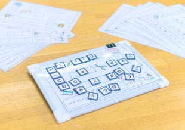
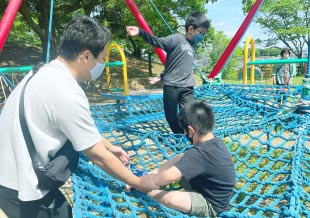
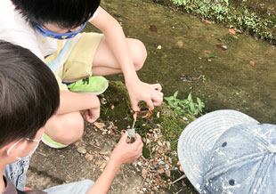

図形モザイクパズル
平面図形を組み合わせて規定の形になるようにします。
ボール遊び
キャッチボール・サッカー・ドッジボール等ボールを使った運動支援をします。
くつひも結び
くつひもをチョウチョ結びできるように練習します。
防災訓練
防災センターで火事や地震に対応する知識を学びます。
手指筋力トレーニング
コマを組み合わせることで、指先の器用さを養います。
買い物支援
スーパー等に買い物にいって、適正な品物を選び、会計をします。
ひらがなブロック
五十音順にひらがなを並べることができるよう練習します。
工場見学
工場や施設を訪問し製造・生産・処理などの過程を学び、体験します。
マナー豆
小さい豆の模型を掴んで、お箸トレーニングをします。
施設見学
現場で実際に見て、触れて楽しく学びます。
タングラム
色んな形のブロックを組み合わせて形を作ります。
立体図形キューブ
赤と白の立方体を組み合わせ、規定の立体図形を作ります。
あけうつし
トング・スプーン・お箸を使って、ボールを規定の場所に移します。
調理支援
キッチンを使って食事やおやつ等ご自宅でも作れるメニューを作ります。
自然体験
フルーツ狩りや屋外で生き物と触れ合う機会も作っています。
はさみ練習
はさみを使って線に沿って切るトレーニングです。
おうちブロック
ブロックを規定の形にならべ、空間把握能力を養います。
ポリックス
見本と同じ色合い形になるように、パーツを組み合わせます。

言葉ならべ
イラストに合わせてひらがなのタイルを並べます。
外出支援
季節に合わせていろんな場所で季節を感じます。
外出支援
水族館や鳥類センター等、動物と触れ合える機会を作っています。
バランスタワー
指先の器用さを鍛えつつ、バランス感覚を養います。
パターンひも通し
数種類の色の紐を、規定の穴に通して形を作ります。

外出支援
普段とは異なる公園等で遊ぶこともあります。

沢あそび
水辺で沢遊びをして自然を体感します。
調理支援
お菓子を作っておやつの時間にみんなで食べます。
外出支援
神社や歴史的建造物などを訪問し学びを深めます。